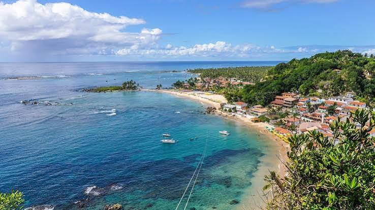
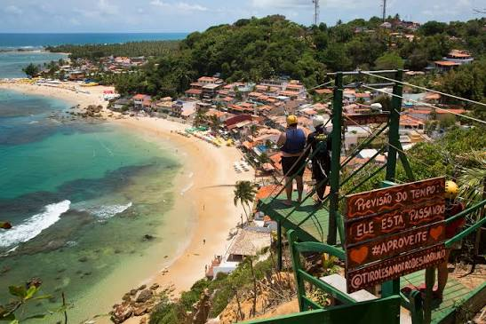
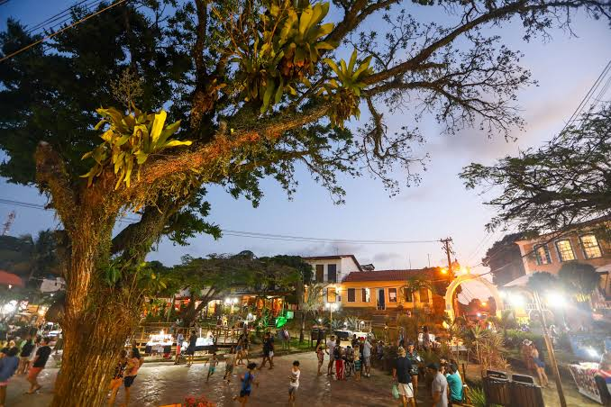

Morro de São Paulo: O Paraíso Baiano
Morro de São Paulo é uma encantadora vila localizada na Ilha de Tinharé, no estado da Bahia. O local atrai milhares de visitantes todos os anos devido às suas paisagens paradisíacas e atmosfera relaxante.
Uma das principais características do destino é que não é permitida a circulação de carros de passeio, garantindo tranquilidade e um contato direto com a natureza durante toda a estadia.
Atrações Turísticas
A ilha conta com pontos turísticos diversificados para todos os perfis de visitantes:
- Primeira Praia (ideal para esportes aquáticos);
- Segunda Praia (ponto central do agito, restaurantes e vida noturna);
- Terceira Praia e Quarta Praia (águas calmas e piscinas naturais);
- Mirante do Farol (vista panorâmica incrível);
- Centro Histórico e Ruínas da Fortaleza.
- Trilhas e Cachoeiras.
Dicas para o Visitante
Para aproveitar sua viagem da melhor forma, observe as seguintes recomendações práticas:
- Evite carregar malas de rodinhas pesadas, pois o transporte na ilha é feito por carregadores com táxi-carrinho.
- Consulte a Tábua das Marés para programar o passeio até as piscinas naturais na maré baixa;
- Utilize calçados confortáveis para fazer as caminhadas pelas praias e trilhas ecológicas.
- Assista ao pôr do sol próximo ao Farol para registrar momentos inesquecíveis.
Galeria de Fotos
Confira alguns registros das belezas naturais da ilha:


